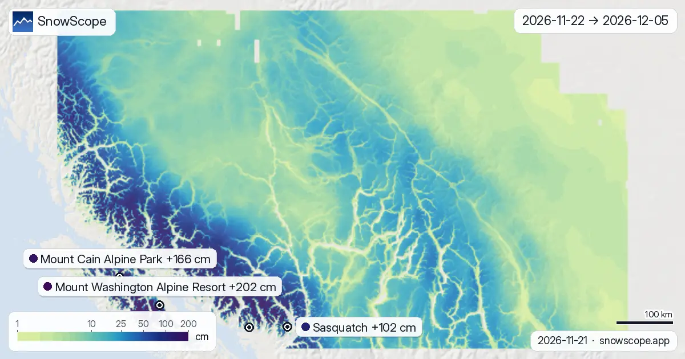
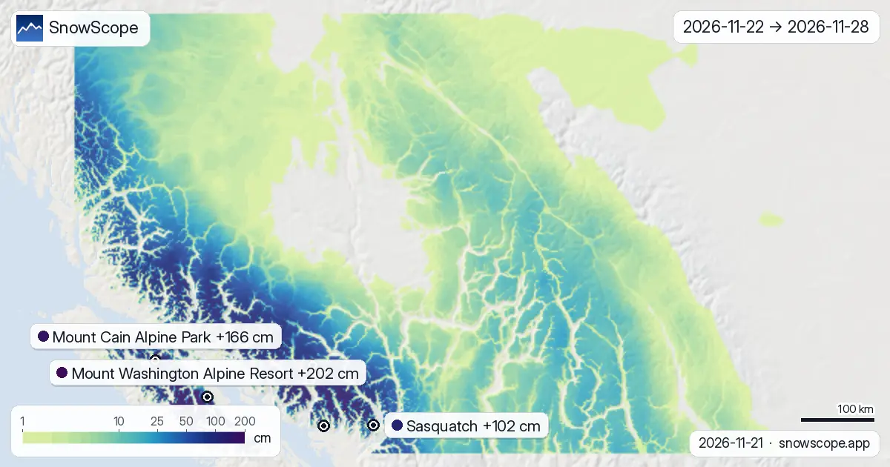

Where it snows in Western Canada in the next 14 days: Mount Washington Alpine Resort leads with 202 cm
Between 22 November and 5 December, new snow will fall across Western Canada's mountains, with the heaviest falls in the first week.
See the live snow forecast for Mount Washington Alpine Resort in the SnowScope appSnow depth, powder alerts and the 3D map, free.
Which resorts get the most snow
Mount Washington Alpine Resort leads with about 202 cm over 14 days. Its upper slopes sit at 1,349 m, and the first week alone will bring 178 cm; the second week adds 24 cm. The biggest day is 24 November: 64 cm falls then, one of eight days when 5 cm or more arrives.
Mount Cain Alpine Park is second: about 166 cm in total (139 cm in week one, 27 cm in week two). Its snowiest day is also 24 November, with 48 cm. The upper slopes at 1,500 m will see 7 days above 5 cm.
Whistler Blackcomb and Sasquatch both forecast roughly 102 cm total, but their peak days differ. Whistler's upper slopes (1,746 m) peak on 26 November with 29 cm; Sasquatch (1,213 m) peaks on 24 November with 22 cm. Mt Seymour near Vancouver will get 86 cm (68 cm in week one), with 24 November bringing 26 cm. Ski Callaghan rounds out the tracked resorts at 73 cm (61 cm in week one), peaking on 26 November with 19 cm.
| Resort | Snow depth | New snow, 72 h | Coming, next days | Top |
|---|---|---|---|---|
| Mount Washington Alpine Resort | 95 cm | 1 cm | 76 cm | 1,569 m |
| Mount Cain Alpine Park | 93 cm | 0 cm | 57 cm | 1,616 m |
| Sasquatch | 13 cm | 0 cm | 25 cm | 1,316 m |
| Whistler Blackcomb | 150 cm | 0 cm | 33 cm | 2,259 m |
| Mt Seymour | 18 cm | 0 cm | 10 cm | 1,255 m |
| Ski Callaghan | 15 cm | 0 cm | 25 cm | 998 m |

When the snow arrives: two distinct phases
The two-week period splits clearly: about 65% of all new snow across the region falls by 28 November. The first week (22–28 November) is the active window; the second week (29 November–5 December) is quieter.
Three days stand out. On 24 November, eight resorts receive 5 cm or more; Mount Washington Alpine Resort alone gets 64 cm and Mount Cain Alpine Park gets 48 cm. On 25 November, eight resorts again exceed 5 cm, with Mount Washington Alpine Resort still receiving 38 cm. On 26 November, the pattern widens: 18 resorts get 5 cm or more, reaching 37 cm at Mount Washington Alpine Resort.

Snow depth by elevation across the region
Looking at all the mountains in Western Canada (not just resort slopes), new snow varies by height. Between 1,500 m and 2,000 m—a critical zone for mid-mountain terrain—the forecast is typically 15 cm, though the snowiest areas of that band may reach 23 cm. Between 2,000 m and 2,500 m, expect about 12 cm typically, with the best areas reaching 22 cm.
Lower elevations (1,000–1,500 m) are drier, averaging about 8 cm, while higher peaks (2,500–3,000 m and above 3,000 m) show 9–10 cm typically. The 1,500–2,000 m band is therefore the sweet spot for accumulation in this outlook.

How much snow is widespread
Across the region, about 102,000 km² of mountain terrain will receive 20 cm or more of new snow over these 14 days. Within that, roughly 43,000 km² will get 50 cm or more—a significant slice of Western Canada's ski country. This means decent base-building snow across a large area, not just at the highest resorts.
What Mount Washington Alpine Resort usually sees
At its upper slopes (1,349 m), Mount Washington Alpine Resort has 6 cm today; climatologically, late November averages 43 cm. Only one winter in ten has more than 97 cm by this date, so a 202 cm forecast in two weeks is well above normal. A week ago this location had 4 cm, confirming that snow cover is building from a thin base.
The 76 cm forecast for the coming few days will roughly treble the current depth and set up the terrain nicely for the late-November push.
Reading the maps and planning
Three maps show the fortnight, then each of the two weeks separately. Colours deepen as snow accumulates; the pins on the maps mark the forecast snow at each resort's upper slopes. Because forecasts beyond one week are less precise, every number comes with a range from the two forecasts: the forecast is a tendency, not a guarantee. The maps update each morning.
Plan your first week with confidence; keep the second week flexible and check again in a few days. The freezing level can shift by several hundred metres, changing where rain becomes snow, so verify the day before you travel.
Tips for skiers
- Target the 24–26 November window if you can: eight or more resorts will see substantial falls, and Mount Washington Alpine Resort and Mount Cain Alpine Park are primed for best conditions on 24 November.
- Upper slopes (above 1,500 m) will accumulate more than base areas; plan touring or lift access accordingly if you want depth.
- The 1,500–2,000 m band is forecast to be the heaviest snow zone across the region; prioritize that elevation if your resort spans multiple zones.
- Before any off-piste or backcountry day, check the official avalanche bulletin—new snow at this rate brings avalanche hazard even if the ski area is open.
- Forecasts are most reliable 3–5 days out; recheck 48 hours before you leave to confirm timing, especially for the second week (after 28 November).
About these numbers
Resort snow depths are the deepest snow on the resort's upper slopes on the date shown; they are estimates for an area, not a measurement at one point. Forecasts can change. Always read the official avalanche bulletin before going off-piste.
Official avalanche bulletins: Avalanche Canada
Cite this report
For research, teaching or the press: the numbers and charts are free to reuse under CC BY 4.0 with this citation.
SnowScope (2026), Where it snows in Western Canada in the next 14 days: Mount Washington Alpine Resort leads with 202 cm, https://snowscope.app/blog/en/2026/11/western-canada-2-week-snow-forecast-maps-21-november-2026.html, accessed 2026-11-21
SnowScope (Atlas Labs). (2026, November 21). Where it snows in Western Canada in the next 14 days: Mount Washington Alpine Resort leads with 202 cm. SnowScope snow reports. https://snowscope.app/blog/en/2026/11/western-canada-2-week-snow-forecast-maps-21-november-2026.html
BibTeX
@misc{snowscope2026westerncanada2weeksnowfo,
author = {{SnowScope (Atlas Labs)}},
title = {Where it snows in Western Canada in the next 14 days: Mount Washington Alpine Resort leads with 202 cm},
year = {2026},
month = nov,
howpublished = {\url{https://snowscope.app/blog/en/2026/11/western-canada-2-week-snow-forecast-maps-21-november-2026.html}},
note = {Published 2026-11-22 10:03 UTC; accessed 2026-11-21}
}· CC BY 4.0 · Methods, data and tools →
Mount Washington Alpine Resort: snow and temperature by height, this winter vs last (tools) →
Follow Mount Washington Alpine Resort
Free: a message when fresh snow is coming, and the forecast every morning.
More snow reports

Whistler Blackcomb will receive 101 cm of new snow by November 25, far exceeding early-season norms. Mount Cain Alpine Park leads the region with 132 cm forecast.

Whistler Blackcomb's upper slopes hold 8.7 ft (266 cm) after a 4.6 ft (141 cm) three-day storm. What 46 winters say about Christmas, and why the valley is the only question.

150 cm on the upper slopes: that is why Whistler Blackcomb heads our list. Snow on the ground, snow from the last 72 hours, snow still to come: …